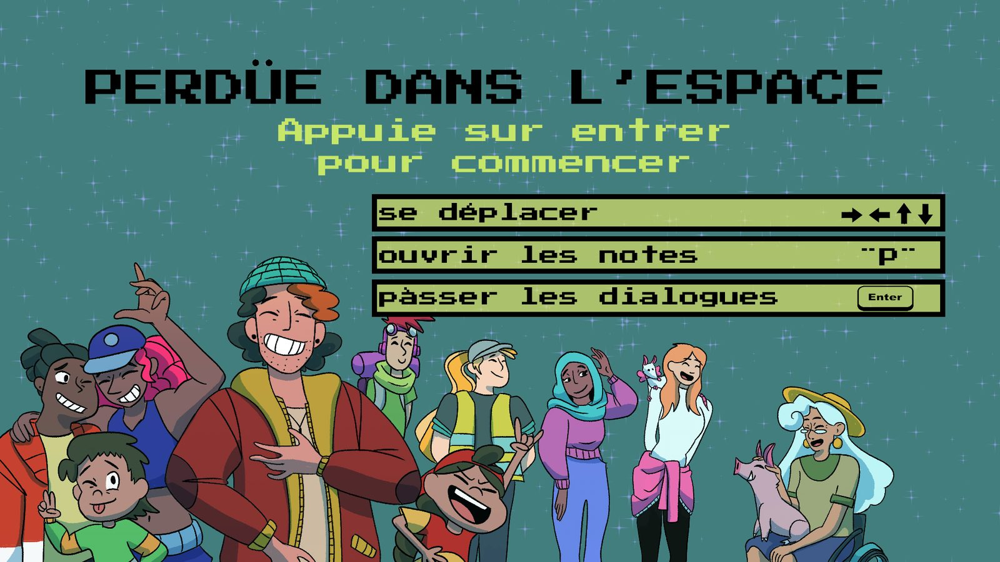
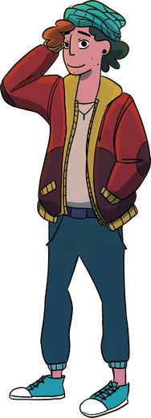
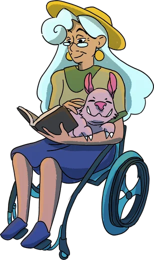
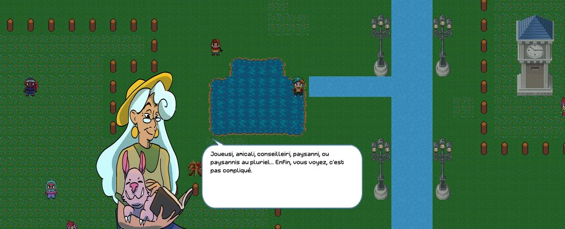
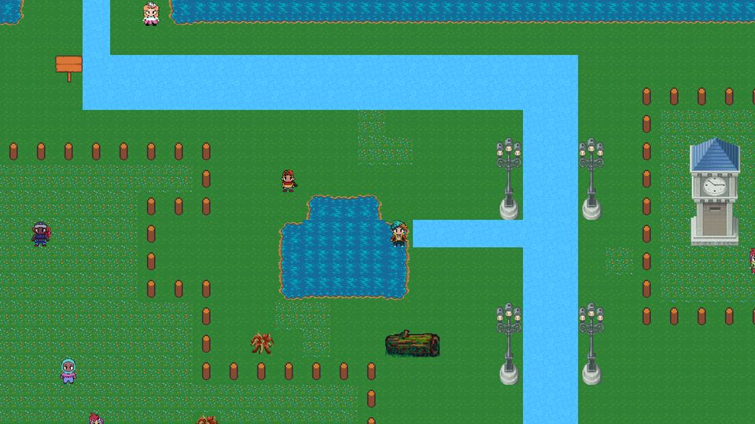
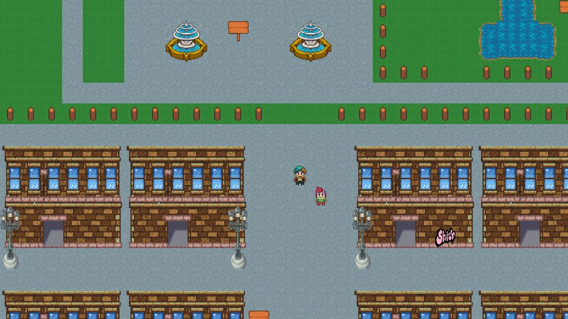
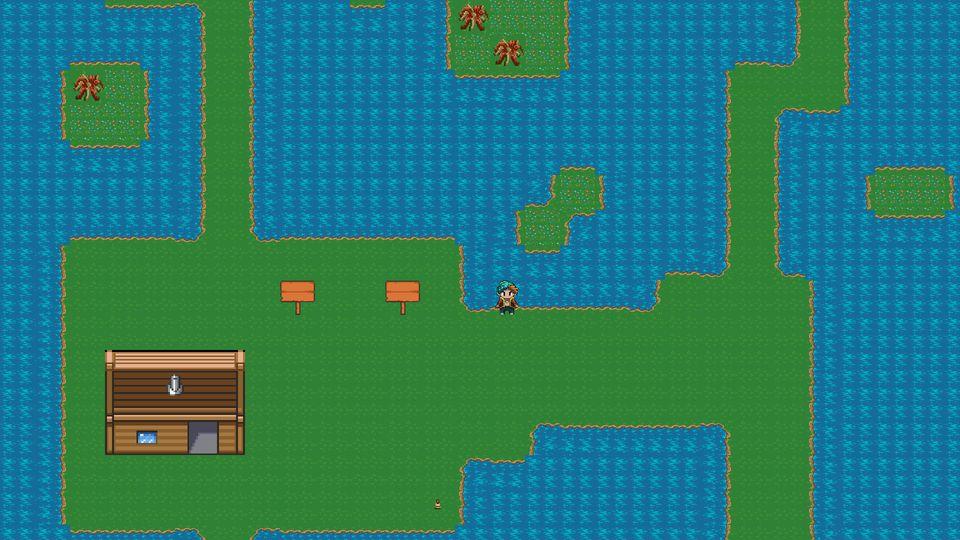
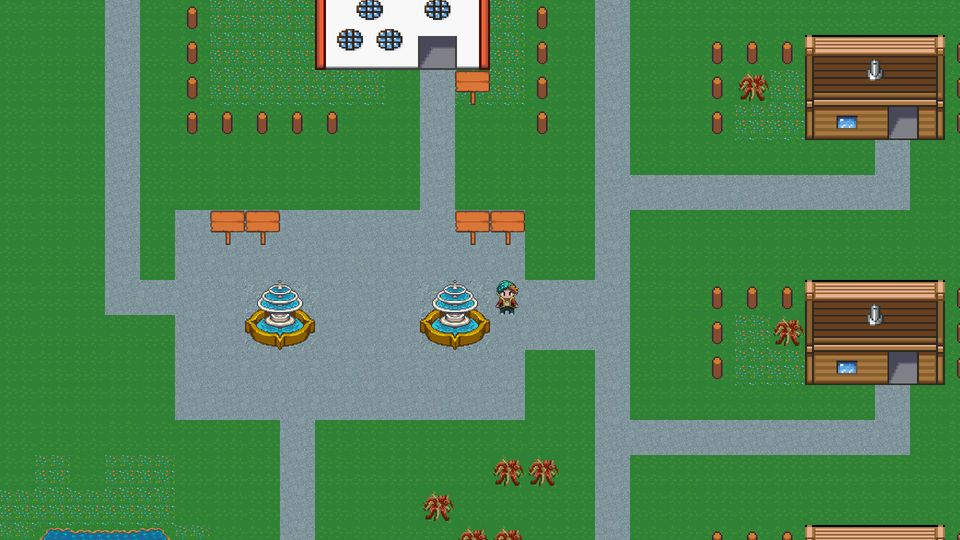

MONDE 1
La solution en « i »
On part de la forme féminine et on ajoute un « i », ou « is » au pluriel.
joueusi, amicali, paysannis

Un éclair blanc, un grand boum… et tout le monde se met à parler français autrement.
Un petit jeu d'aventure rétro, gratuit, pour découvrir des façons de parler sans genrer les personnes, et la manière dont les langues du monde rangent les mots.
Le jeu se joue au clavier : ouvrez cette page sur un ordinateur pour y jouer.
En savoir plus ↓L'histoire
Un éclair, un son étrange, et le voilà dans un monde presque identique au sien. Presque, parce qu'ici tout le monde ajoute un « i » à la fin des mots, et que personne ne semble trouver ça bizarre.
Pour rentrer chez lui, Charlie doit aider Gandalf, linguiste des univers, à retrouver quelle langue est la sienne. Il va parler avec les habitantis, résoudre des énigmes et remplir son carnet de notes, d'univers en univers.



Les mondes
Chaque monde s'inspire de propositions réelles pour le français, ou de systèmes attestés dans les langues du monde. Rien n'est imposé : on observe, on compare, on s'amuse.
On part de la forme féminine et on ajoute un « i », ou « is » au pluriel.
On ajoute des "ae" ou "aer" à la fin des mots.
On fusionne les mot masculins et féminins.
Un petit mot indique la forme de l'objet : rond, long, poudreux… Environ un tiers des langues du monde font ça.
La marque de la classe se répète sur tous les mots qui s'accordent dans la phrase.
Masculin, féminin… et neutre. Même avec des genres, les mots ne tombent pas dans les mêmes boîtes d'une langue à l'autre.




Comment jouer
En classe, en médiathèque, en atelier
Le jeu ne cherche pas à dire comment il faut parler. Il montre que les langues changent, qu'elles s'organisent de façons très différentes, et que ces choix ont des effets. De quoi lancer une discussion à partir d'exemples concrets.
Pour prolonger : la BD du projet EVOGRAM, à lire en ligne ou en PDF.
Vous l'utilisez avec un groupe ? Racontez-nous comment ça s'est passé.
Le projet
« Perdüe dans l'espace » a été conçu dans le cadre du projet de recherche EVOGRAM, financé par l'Agence nationale de la recherche. EVOGRAM étudie le rôle des facteurs linguistiques et non linguistiques dans l'évolution des systèmes de classification nominale : genre grammatical, classificateurs, classes nominales… exactement ce que Charlie traverse de monde en monde.
Le code du jeu est ouvert et disponible sur GitHub.
Pour aller plus loin
Pourquoi le français range ses noms en masculin et féminin, le swahili en « humains » ou « plantes », et le mandarin selon la forme des objets ? Une BD pour comprendre comment les langues structurent la réalité.
Scénario de Benoît Connin, dessin de KiWeen
Prêt·e à aider Charlie à rentrer chez lui ?
Jouer maintenant